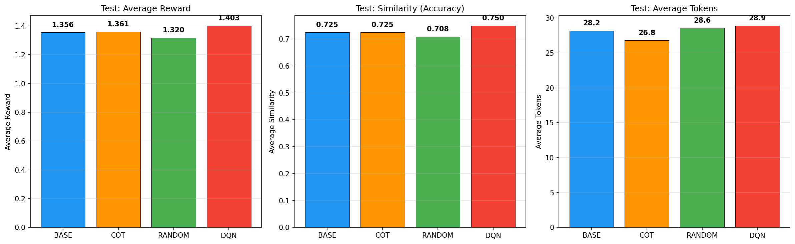

DQN for Dynamic Prompt Optimization on LLMs
Reinforcement Learning agent (DQN) trained to dynamically inject prompt modifiers into a frozen LLM (TinyLlama-1.1B) on the BoolQ dataset, outperforming zero-shot and Chain-of-Thought while minimizing answer length.